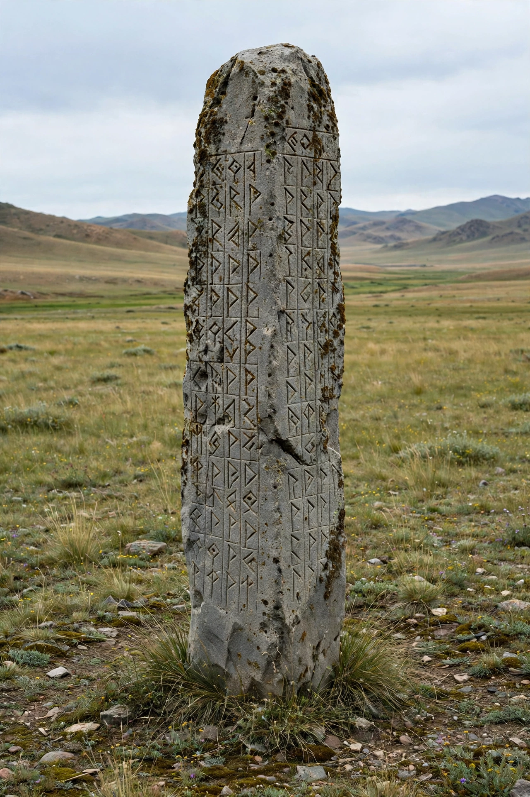

The Orkhon inscriptions are the earliest known texts in a Turkic language, erected in the Orkhon Valley of Mongolia in honour of the Göktürk princes Kul Tigin (732) and Bilge Khagan (735), with a related Tonyukuk inscription (c. 720s).
Russian expeditions publicised the stelae in 1889. Danish linguist Vilhelm Thomsen deciphered the Old Turkic script in 1893, using the parallel Chinese text on the Kul Tigin monument — a breakthrough for Turkology.
Written in first person in Bilge Khagan's voice, the texts recount the founding of the Second Turkic Khaganate, warn Turks against Chinese seduction and disunity, and memorialise Kul Tigin's campaigns and funeral. They are national treasures of Mongolia and Turkey, and the valley is a UNESCO World Heritage Site as part of the Orkhon Valley Cultural Landscape.